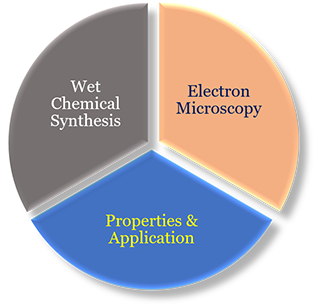
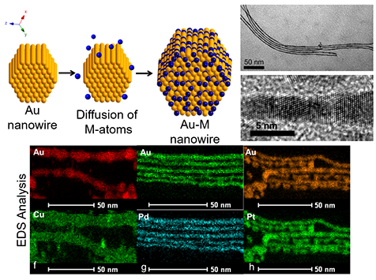
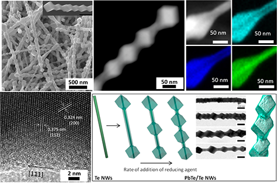
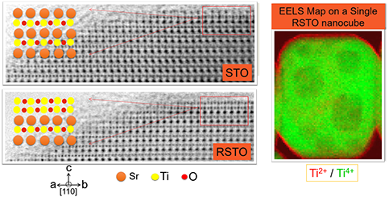
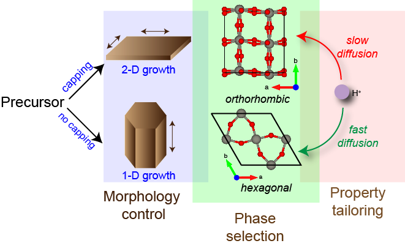
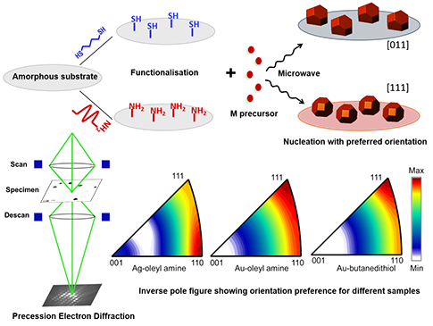
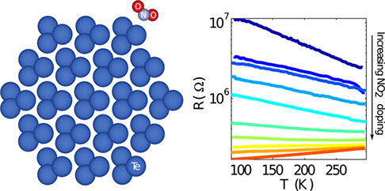

Collaborators








![The research of our group is broadly and sequentially categorized into three aspects of nanoscale materials science. First of, we "make" the nanostructures through wet-chemistry. Then, we characterize them through an array of methods. Primary of which is electron microscopy - where we can "see" the materials, now even up to atomic scale! We focus a lot on interrogation of the nanoscale system through electron microscopy, and that is the primary expertise of our group. This helps us in understanding various aspects of nucleation and growth, which are two corner-stones of any nanomaterial synthesis. Once synthesized, we use the material for various applications, such as gas-phase catalysis/electrocatalysis. That's where we "apply" the materials. To know more, please visit our publications page. We also have very active collaborations to probe various areas of interest. For more details, please visit the page listing all our collaborators, and their webpages!](images/u4803-10.png)
![Ultrathin single crystalline Au nanowire is a strained anisotropic morphology with interesting fundamental and applicative aspects. A disadvantage of the ultrathin morphology is the intrinsic fragility which makes it difficult to handle. Converting Au nanowires to its alloy counterpart maintaining the morphology and single crystalline nature is non-trivial due to its instability at higher temperature and polar solvents. An innovative and general reaction scheme of converting Au nanowire template to AuCu, AuPd and AuPt alloy nanowires at the liquid-liquid interface has been devised. The ultrathin alloy nanowires are found to have remarkable thermal and mechanical stability and are excellent electrocatalysts for methanol oxidation.](images/u4812-4.png)
![Heterostructures of semiconductors with coherent interfaces and suitable morphology find applications in many fields. Here, we have been able to design beaded heterostructures of single crystalline nanowire of PbTe/Te using Te nanowires as templates. Control experiments show that the reduction of a Pb precursor to Pb on Te nanowire template, followed by interdiffusion of Pb into Te leads to the formation of a thin shell of PbTe on the wires. Further, controlled dewetting of the thin shell leads to the formation of cube-shaped PbTe, periodically arranged on the Te wires. The observations are consistent with surface energy minimisation argument. The inter-bead distance can also be controlled by the reaction conditions!](images/u4921-4.png)
![The oxidation state of B-site Ti-cation in SrTiO3 (STO) is crucial in engineering its electronic properties. Herein, a strong reducing environment provided by solid NaBH4 is used to create large number of oxygen vacancies on STO nanocubes. The (100) surface of a reduced-STO (RSTO) nanocube shows a metallic Ti-O type of atomic arrangement in the first two layers, as observed in the ABF-STEM (courtesy: EMAT-Antwerp). EELS mapping performed on a single RSTO nanocube shows significant presence of Ti2+ on the surface, compared to the bulk Ti4+.](images/u4844-12.png)
![Tailoring the electrochromic property of WO3 demands a stringent control of phase and morphology. WO3 exists in 12 crystal structures, and synthesizing it as a phase-pure material is a daunting task. We have been able to synthesize phase-pure hexagonal and orthorhombic WO3 by a simple hydrothermal process, through variation of capping agent. The hexagonal phase shows a nanorod morphology, and the orthorhombic phase shows a plate morphology. Energetics of capping calculated by DFT simulations complement the results as well. The two phases show very different coloration behavior, which can be rationalized by simulations.](images/u4856-11.png)
![Equilibrium crystal shape during heterogeneous nucleation is called Winterbottom (WB) shape, which is nothing but a truncated Wulff shape. The extent of truncation in WB shapes is a function of the interfacial energy between the crystal and the substrate. The WB shape of an anisotropic crystal nucleating on a given amorphous substrate have infinite possibilities depending on its orientation with respect to the substrate. Both experimentally and analytically it has been confirmed that the system prefers to nucleate in the orientation which has the least nucleation barrier the most. Orientation preference has been shown to have far reaching implication in the field of heterogeneous catalysis.](images/u4879-4.png)
![Semiconductor to metal (S-M) transition usually requires application of high pressure, or chemical/compositional transformation of materials. In this paper, in contrast to the usual severe conditions, we show that ultrathin trigonal Te nanowires undergo S-M transition upon simple adsorption of NO2. This phenomenon was predicted by DFT calculations, and was verified by R-T measurements (courtesy: Prof. Aveek Bid's lab, Physics, IISc) on the Te nanowires synthesized wet-chemically in our lab. This is one of the many examples of our collaborative works.](images/u4899-6.png)